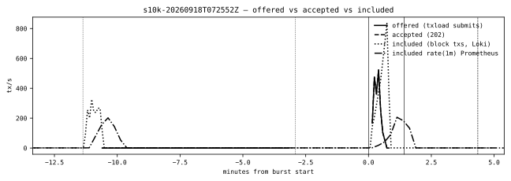
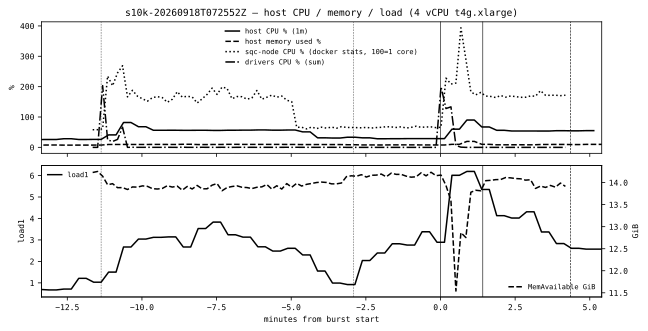
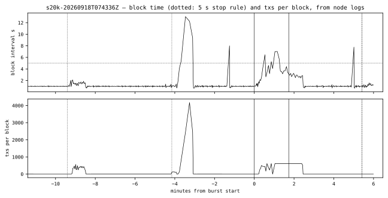
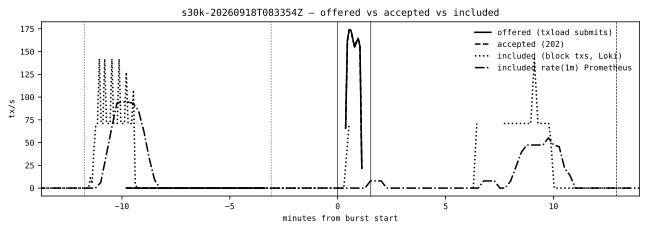
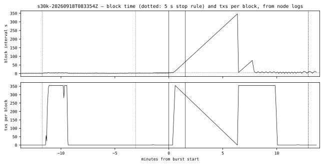

Validation report · node releases v1.1.0 and v1.1.1
Splendor Quantum Chain
Release contents, upgrade compatibility, stress test and validator fault program for node release v1.1.0 and the RLNC object-transfer release v1.1.1, now live on all three tiers.
v1.1.0 — 26 commits, ec8f060…b8e31a0, tag eaef3c9, 17 Sept v1.1.1 (11d372e) — RLNC object transfer, merged 18 Sept, live on all tiers
Status
Evidence complete. The 30k stress stage was contaminated and 40k / sustained were not run: devnet was reconfigured under the test.
—In plain words: what the chain is, what is live, what was tested
1Release contents (PR #42, PR #43)
2Upgrade compatibility
3Stress test
4Validator fault program
5Known limits, follow-ups, reproduction
In plain words
What Splendor Quantum Chain is
A new Layer-1 blockchain built for the post-quantum era. Every account, transaction and block has been signed with ML-DSA-65 post-quantum signatures since the very first block, so there is no signature scheme to migrate later. Addresses and commitments use SHA3-256. The supply is fixed: 26 billion SPLD, minted once at genesis.
All three tiers run v1.1.1 (11d372e, RLNC object transfer) since 18 September.
Capabilities in plain words
Post-quantum accounts and validators. User keys and validator keys are ML-DSA-65; the signatures that secure funds and blocks are designed to withstand quantum computers.
Native tokens. Fungible (QRC-20), multi-asset (QRC-1155) and collectible (QRC-721) tokens are built into the chain, no custom contract needed.
Migration bridge. Legacy SPLD and SPLV are burned on the old chain and claimed on the quantum chain, one for one.
Splendor Quantum Verification Layer. Instructions are dual-signed with two independent post-quantum schemes, ML-DSA-65 and SLH-DSA.
Validator admission. Approval-based, with a 2,500 SPLD bond. Public admission has not launched.
Tools people can use today. Block explorer, browser wallet extension, phone wallet, faucet.
x402 micropayments. A payment is reported as submitted and then confirmed, so a payer always knows whether it is final.
What was done this week
v1.1.0 (17 September) merged, a 26-commit hardening release: consensus recovery, honest failed-commit reporting, fsync durability, validator-set reads, VM gas rules, public limits, snapshot recovery, wallet/KEM hardening, x402/identity, README and SDK clean-up.
Devnet and testnet upgraded in place, with no chain reset and no lost history.
Mainnet re-minted with the 26 billion SPLD treasury: on v1.1.0 (17 Sept, 22:21 UTC) and again on v1.1.1 (18 Sept, 08:21 UTC); genesis hash unchanged both times.
v1.1.1 (18 September): RLNC object-transfer library and optional sealed live path merged; off by default; devnet and testnet upgraded in place, mainnet re-minted on it.
What is not claimed yet
RLNC live transfer is merged but off by default and not used by block sync.
DEX, lending and governance are not native modules.
Public validator admission is not open.
A set of 2 or 3 validators cannot tolerate a faulty member (quorum ⌊2n/3⌋+1). Tolerating one needs n ≥ 4 andbft_rounds_v1 active — unscheduled on every public tier today; schedulable on a running tier without a reset.
What the tests showed
The 40k and sustained stress stages, and a clean 30k, are fully scripted and mark themselves contaminated if the network changes under them; they need a stable single-validator devnet window.
Test
Result
Detail
Upgrade in place, devnet-shaped (local harness + live devnet)
PASS — 79 / 79 ×3
v1.0.20, v1.0.21 → v1.1.0; v1.1.0 → v1.1.1; live devnet swaps at 106,997 and 139,085, genesis unchanged
all 10,000 accepted and included; one 15 s block; no restart
Stress test, 20,000 accounts
SURVIVED, contaminated
all 20,000 committed; concurrent validator-set change on devnet by another operator
Stress test, 30,000 accounts
CONTAMINATED
7,586 sent before the stop rule; second validator admitted 90 s before the burst; chain stalled 346 s
Stress test, 40,000 accounts
not run
devnet reconfigured mid-test
Validator fault program (4-validator lab)
PASS — 8 / 8 scenarios
under bft_rounds_v1; pre-fork control documents the n = 3 limit
Technical · section 1
1Release contents
Node release v1.1.0 is the 26 commits ec8f060…b8e31a0 (tag eaef3c9), merged on 17 September 2026 as PR #42. PR #43, merged on 18 September as v1.1.1 (11d372e), adds the RLNC object-transfer library and an optional sealed live path. The tables below list every review item, its implementation status and the commits that close it.
1.1PR #42 — hardening release, closure table
All 23 review items implemented. Item IDs and descriptions follow the reviewer's list; the three orchestrator fixes landed during closure are listed as their own rows.
Item
Description
Status
Evidence
C — consensus and durability
C1
Complete BFT recovery across rounds — two-phase rounds behind bft_rounds_v1 (not yet scheduled on live tiers)
implemented
f5d6041
C2
Do not report a failed state commit as successful
implemented
ec8f060
C3
Power-loss durability for blocks, state and signing records
implemented
6891140
C4
One committed validator set; propagate registry errors
implemented
7c38754
C5
Enforce the VM's work budget (child gas, copy charges, failed receipts) — behind vm_gas_v1 (unscheduled)
implemented
43b2ff9
C6
Public resource limits and effective timeouts
implemented
6975bdb
R — snapshot recovery and sync
R1
Default snapshot pagination
implemented
48b76df
R2
Bound and release snapshot sessions
implemented
48b76df, c1d56b9
R3
Bounded, resumable snapshot downloads
implemented
74cd1d2
R4
Reconcile both stores before deleting recovery evidence
implemented
74cd1d2, 3f6805e, 45495da
R5
Snapshot trust for a rotating validator set (genesis-checkpoint only)
implemented
04a1902
R6
Recover indexes, report readiness accurately
implemented
04a1902, 4dc5ad7, fe35f08; 694a46b
R7
Parallel block-fetch behaviour
implemented
04a1902, 4dc5ad7
I — interfaces: VM, compiler, SDK, x402, wallet, gateway
SQVL settlement and identity guarantees — behind verify_identity_v1 (unscheduled)
implemented
f17861a
I6
Wallet-file parsing and saving
implemented
d215087
I7
KEM rotation and replay policy
implemented
d215087
I8
Gateway TLS and event-stream behaviour
implemented
ce9743b
Documentation and bounds
README/SDK
Capability clean-up: advertised capabilities match the routed module catalogue; governance/DEX/exchange live-route claims dropped
implemented
b4a942e, 87f9b08, da6c2bc
RLNC
RLNC library bounds: repair, dimensions and codebook copies (the 26th commit)
implemented
b8e31a0
Orchestrator fixes landed during closure
O1
leveldb-free core/persist/filesync so the WASM signer build does not link leveldb; signer re-pinned
implemented
5a8dfb0
O2
Boot-safe tx-index backfill on an upgraded node: asynchronous walk, readiness reported separately (section 2.4)
implemented
694a46b
O3
/state/account served as a point read; simulation sandboxes release their snapshots
implemented
5e50bbb
Four items ship behind fork names that no live tier has scheduled yet — bft_rounds_v1 (C1), vm_gas_v1 (C5), vm_call_v1 (I3), verify_identity_v1 (I5). They activate through the fork-schedule extension on a running chain (section 2.1), never by editing the genesis document.
Accepted residuals (not blocking v1.1.0)
OperatorIdentities persistence is ungated before the verify_identity_v1 fork activates; the table is written but not consulted until then.
/status takes the executor lock; a heavily loaded executor delays status responses rather than serving a stale view.
Per-source request caps are keyed on RemoteAddr; behind cloudflared every request shares the tunnel's address, so the caps act as a global rather than per-client limit on hosted tiers.
Pre-fork BFT accepts kind-tagged votes; the stricter vote-kind check applies only after bft_rounds_v1 activates.
1.2PR #43 — RLNC object transfer, v1.1.1
Merged: main = 11d372e, tag v1.1.1 cut on 18 September 2026 at about 07:05 UTC; devnet and testnet upgraded in place and mainnet re-minted on it the same morning (section 2.3). Seven commits. Nothing consensus-visible or on disk changed, so the release rolls without a reset. The sealed live path is off by default: a node started without --object-codec answers 404 coded-object live path is not enabled.
Commit
Change
4afab9c
SQCO wire format with a signed codebook size
fe6dc21
Transfer controller: authenticate before decode
14c652e
Optional sealed RLNC live path (--object-codec, default off)
Review fix: aggregate symbol-fetch deadline max(2 min, n × 2 s), capped at 10 min; a single HTTP client
11d372e
Review fix: manifest and symbol reply caps applied to the sealed wire size — before this, proofs above about 48 KiB were truncated
Status by review item, final for v1.1.1.
Item
Review item
Status
What exists / what is missing
(2)
Wire format versioned
partial
SQCO magic / version / type; every length prefix capped before allocation; signed CodebookSize; anchor kinds allowlisted. Still no chain-id binding in DescriptorID.
(3)
Transfer controller
partial
Manifest exchange, bounded symbol requests, aggregate deadline. No capability negotiation, expiry, retry/failover or progress reporting.
(4)
Authenticate before decode
implemented
Verify → authorise → per-symbol Merkle proof before Absorb; a nil authoriser fails closed.
(5)
Reconstruct and validate
partial
Padding rejected, full rank required. FetchCodedObject has no non-test caller, so no decoded object is chain-validated by anyone yet.
(6)
Selectable transport
partial
Flag, ordinary fallback, default off. No metrics, no per-peer byte/CPU budgets; the hub serves the first published snapshot until restart.
(7)
Benchmark
partial
SQCO bytes, authenticate-vs-decode time, corrupt-proof and corrupt-coefficient scenarios. The uncoded baseline lacks selective retransmission, so the gain is an upper bound.
—
Recoding
absent, correctly
Intermediate nodes do not recode; out of scope for v1.1.1.
Technical · section 2
2Upgrade compatibility
2.1Method
Before v1.1.0, devnet and testnet ran v1.0.20 (4250a5f) and mainnet ran v1.0.21 (9f974cd). The question is whether a node holding a data directory written by either release can be switched to v1.1.0 without a chain reset, keep producing on the same genesis, and be switched back. The procedure is step 2 of the operator runbook, the image swap, exercised two ways: by a local swap harness that runs the real splendor-infra entrypoint on copies of devnet-shaped and mainnet-shaped data directories (scratchpad/swap/run.sh <old-ref> <new-ref> <devnet|prod>, to be committed alongside the validator-join scripts), and then for real on the live tiers.
Baseline. The old release seals at least 15 blocks carrying transfers and a deployed QSol counter contract; height N, genesis hash, validator set and /status are recorded.
Swap. The old node is stopped with SIGTERM and the candidate image is started on the same data directory. The entrypoint writes the genesis document only on first boot, so an existing directory is never re-minted.
Verify. The candidate resumes at N+1 with prev_hash equal to the old head; genesis hash and block 0 identical; balances byte-identical; a new transfer confirms; the counter's contract state is readable; the tx-index backfill runs and /readyz turns ready.
Crash recovery. The candidate is restarted cleanly and then killed with SIGKILL; it recovers and seals both times.
Fork extension. The release's new fork names (vm_gas_v1, bft_rounds_v1 for v1.1.0) are scheduled above head through the opt-in fork-schedule extension on the running node; the schedule is adopted and blocks are sealed across every activation. The genesis document is never edited, so its hash cannot change.
Rollback. The old release boots on the directory the candidate wrote, and seals. On the mainnet-shaped directory v1.0.21 additionally shows identical balances, readable candidate-era transactions and a confirming new send.
Every check is a scripted assertion and the harness exits non-zero on the first failure.
2.2Local swap harness results
Data directory
From → to
Checks
Notes
devnet-shaped
v1.0.20 → v1.1.0
PASS — 79 / 79
the path devnet and testnet took
mainnet-shaped
v1.0.21 → v1.1.0
PASS — 80 / 80
same genesis document and validator key as mainnet; rollback keeps balances identical
devnet-shaped
v1.0.21 → v1.1.0
PASS — 79 / 79
cross-check: mainnet's old release on devnet-shaped data
devnet-shaped
v1.1.0 → v1.1.1
PASS — 79 / 79
same scenario set; rollback to v1.1.0 boots and seals
mainnet-shaped
v1.1.0 → v1.1.1
PASS — 80 / 80
same scenario set; balances byte-identical across swap and rollback
unchanged; no reset; 18 Sept ~09:24 UTC; ready immediately
Mainnet splendor-quantum-1
v1.1.0 → v1.1.1, reset
≈137,000
0 → climbing 137 at 08:22:40
d865193d…
identical hash again (same validator key and genesis document); reset 18 Sept 08:21 UTC, deploy run 35323816854, pre-reset EBS snapshot snap-05f1576c34b7010bf; treasury SQ:665f89b6… = 26,000,000,000 SPLD exact; validator_set_size 0; /readyz ready, indexer lag 1
All heights and hashes read from each tier's /status before and after the swap.
2.4Transaction-index backfill and readiness
A v1.1.0 node that inherits a pre-v1.1.0 directory rebuilds its transaction index by walking the chain in the background (694a46b). Block, state and account RPCs answer immediately from the stores; only index-backed lookups wait. During the walk /readyz answers HTTP 503 so a load balancer keeps traffic on peers, while /healthz stays 200 and /status remains available:
{"ready":false,"reason":"transaction index behind applied height",
"applied_height":…,"index_height":…,"index_coverage_from":0,
"syncing":false,"recovering":false,"validator_locked":false}
Devnet reached ready about 3 minutes after the v1.1.0 swap (index 98,303 → 107,089); testnet about 10 minutes (75,775 → 434,911), sealing throughout. The walk is a one-time cost: the v1.1.0 → v1.1.1 swaps found the index watermark already present and answered /readyz ready at once (devnet applied 139,158 = index 139,158; testnet 466,967 = 466,967), with /healthz 200 throughout; the re-minted mainnet was ready from block 0 with an indexer lag of 1.
Technical · section 3
3Stress test
3.1Method
Target: the devnet node (splendor-quantum-devnet-1, v1.1.1, commit 11d372e) on its own host, a t4g.xlarge (4 vCPU, 16 GiB). Baseline before load: block interval 1.000 s (Loki p50 1.001 s, p95 1.022 s over 586 blocks), background 0.80 tx/s, mempool ≤ 1, host CPU ≤ 27 %, 2,304 CPU credits.
Load is generated by cmd/txload running inside the devnet host's compose network, so the RPC path under test is the node's, not the tunnel's: 20 containers, each pinned to --cpus 0.05 (0.1 from the 20k run on) and --memory 48m, each driving a disjoint --sender-offset range at --rate 24 --one-shot — every sender submits exactly once, so a stage is a burst of N signed ML-DSA-65 transfers at the min_fee_v1 floor, offered from 20 source addresses. Stages escalate the sender population 10,000 → 20,000 → 30,000 → 40,000, followed by a 15-minute sustained stage. Before each burst a funding pass tops up the new senders with 1 SPLD each from 20 funders that the faucet had endowed with 44,000 SPLD in total (faucet 992,180 → 948,180 SPLD). The txload changes (--lazy-keys, --one-shot, --scan-node -1, --fund-deadline) are commit e2014c8; the runbook and scripts are e35f323 under scripts/aws/devnet-stress/ on branch stress/txload-devnet, to be merged.
A watcher samples /healthz and /status every 5 s and records container restarts and OOM kills; the 5 s block-interval line is drawn dotted in the figures as the degradation threshold. Metrics come from Prometheus on the observability box (15 s series: sqc_chain_height, sqc_mempool_size, sqc_txs_processed_total, host CPU/memory/load), from Loki (per-block transaction counts and intervals from the node's own log lines), from docker stats for the node process, and from each driver's stats.jsonl / summary.json. Two exported counters are dead and were not used: sqc_txs_failed_total and sqc_rpc_requests_total are registered but never incremented. The stage scripts self-mark a stage CONTAMINATED when the validator set or the node container changes during its window.
3.2Results
One row per measurement, one column per stage. RTT = driver-side submit round trip; inclusion = submit to block, sampled 1 in 10; "node CPU" is docker stats for the node process, 100 = one core. 30k: 22,414 of the 30,000 transactions were never sent because the stop rule halted the drivers.
10,000
20,000
30,000
40,000
sustained
Verdict
SURVIVED (degraded)
SURVIVED, contaminated
CONTAMINATED
not run
not run
Burst start (UTC), duration
07:37:41, 85 s
07:53:28, 104 s
08:46:08, 92 s (stopped)
—
—
Submitted / accepted (202)
10,000 / 10,000
20,000 / 20,000
7,586 / 7,586
—
—
429 / rejected / transport errors
0 / 0 / 0
0 / 0 / 0
0 / 0 / 0
—
—
Offered peak (5 s) / accepted mean, tx/s
523 / 118
460 / 192
174 / 82
—
—
Included rate peak (1 min, Prometheus), tx/s
206
204
55
—
—
Mempool peak (Prometheus 30 s / driver 5 s)
5,936 / 6,468
14,531 / 15,374
7,233 / 6,913
—
—
Block-time peak; intervals > 5 s; back to 1 s after
15.26 s; 3; 53 s
7.77 s; 6; 301 s
346 s (stall); 39; 768 s
—
—
Transactions per block, peak
4,173
613
355
—
—
Inclusion p50 / p95
16.1 s / 26.8 s
14.4 s / 30.0 s
13.9 s / 16.0 s
—
—
RTT p50 / p95
59 ms / 1,571 ms
435 ms / 1,626 ms
1,824 ms / 2,470 ms
—
—
Host CPU peak / node CPU peak
90 % / 394 % (≈ 4 cores)
99 % / —
99 % / 212 %
—
—
MemAvailable min / load1 peak
11.6 GiB / 6.19
13.9 GiB / 7.51
12.9 GiB / 11.74
—
—
Restarts / OOM / bad /healthz samples
0 / no / 0 of 96
0 / no / 0
0 / no / 0 of 150
—
—
Validator set during the stage
1
1 → 2
1 → 4
—
—
10,000 accounts — survived, degraded
About 480 tx/s were offered across the 20 source addresses (5-second peak 523 tx/s); every transaction was accepted and included, with no 429 and no rejection. The batch scheduler drained the flood by growing blocks rather than holding the 1 s cadence: one block carried 4,173 transactions and took 15.26 s, about 4.2 ms per transaction, which is the ML-DSA-65 verification cost. Three block intervals exceeded 5 s. Block time was back at 1 s within one block of the crest (07:38:25 → 07:38:35 UTC); inclusion p95 was 26.8 s. The node process peaked at 394 % CPU (all four cores), /healthz answered 200 in all 96 watcher samples, no restart, no OOM.
20,000 accounts — survived, contaminated
All 20,000 transactions were accepted and committed (largest block gap 7.77 s, no stall, no OOM, no restart). The numbers are not attributable to load alone: from 07:54 UTC an external operator began converting devnet into a multi-validator set on the same host — containers sqc-val-01/02 joined the node's network at 07:54:16, the node container was recreated between 07:58 and 08:02, and sqc_txs_processed_total reset mid-window (which is why the Prometheus "included" delta for this stage is meaningless). The stage self-marked CONTAMINATED.
30,000 accounts — contaminated
The stage was retried once the earlier reconfiguration had settled. Pre-flight at 08:29 UTC confirmed a single validator (restarts 0, 1.00 s blocks, empty pool), with three foreign sqc-val containers still co-resident on the host at about 55 % CPU each. The funding pass finished at 08:43:03. At 08:44:38, 90 s before the burst, the external operator admitted a second validator (first 2-vote certificate at height 142,792). The burst started at 08:46:08; at 08:46:42 the height stalled at 142,821 for 346 s with 78 BFT: round timeout, view change lines. The stop rule (average block time 5.42 s over 130 s) halted the drivers at 08:47:15 after 7,586 of the 30,000 transactions had been sent — all 7,586 accepted, none rejected, no 429. The set went 2 → 3 at 08:52:35 and 3 → 4 at 08:58:10 during the drain; the pool had drained by 08:59:03. The node process never faltered (/healthz 200 in all 150 watcher samples, restarts 0, no OOM); consensus did. The stall is consistent with a 2-of-2 quorum whose new member had joined 90 s earlier as much as with load, so the result is not attributable to load.
Contrast. At 10k, on a true single validator, the node cleared a 4,173-transaction block in 15 s and recovered on the next block. At 30k, under a 2-validator quorum, the largest block was 355 transactions and the chain stalled. The ceiling moved from the executor (ML-DSA-65 verification, about 4 ms per transaction) to consensus liveness under the pre-fork rules.
40,000 and sustained — not run
The validator set changed during the 30k stage, which is the sweep's abort rule. At hand-off (09:05 UTC) devnet was frozen at height 142,888 with validator_set_size 4 and a 3-of-3 certificate requirement — the external operator's configuration under the pre-fork rules, the live counterpart of the n = 3 stall reproduced in the lab (section 4). The 40k and sustained stages, and a clean 30k, are fully scripted and self-mark CONTAMINATED on a topology change; the sweep resumes only on a stable single validator, or on a re-baselined multi-validator devnet with bft_rounds_v1 scheduled.
3.3Figures
Time axis: minutes from burst start. Vertical lines: dotted = funding pass, solid = burst start and end, dashed = end of the drain window. Horizontal dotted line in the block-time panels: the 5 s threshold.

Figure 3.1 — 10,000 accounts: offered (driver submits), accepted (HTTP 202) and included (Loki per-block counts; Prometheus 1-minute rate). The funding pass at −11 min is visible at left.Figure 3.2 — 10,000 accounts: block interval and transactions per block from the node's log lines. The single 4,173-transaction block is the 15.26 s interval; the cadence returns to 1 s on the next block.Figure 3.3 — 10,000 accounts: mempool depth from Prometheus (30 s scrape) and from the drivers' /status polls (5 s); the 30 s scrape under-reads the true peak of 6,468.

Figure 3.4 — 10,000 accounts: host CPU, node-process CPU (100 = one core), driver CPU, memory, load1 and MemAvailable. The node saturates all four cores for the duration of the crest; memory is untouched.Figure 3.5 — 20,000 accounts: offered, accepted and included. The included series after +1 min overlaps the external validator-set change; the stage is contaminated from 07:54 UTC.

Figure 3.6 — 20,000 accounts: block interval and transactions per block. The burst itself never exceeded 7.77 s. The 13 s interval at −3.4 min is the funding pass's 10,000 transfers being drained in one 4,173-transaction block just after the funding window closed (07:50 UTC), before the burst; the spike near +5 min coincides with the node container's recreation (07:58–08:02 UTC).

Figure 3.7 — 30,000 accounts: offered, accepted and included. Offered stops at +1.1 min when the stop rule halts the drivers; inclusion resumes only after the 346 s stall, in blocks capped near 355 transactions.

Figure 3.8 — 30,000 accounts: block interval and transactions per block. The ramp from +0.5 to +6.4 min is a single 346 s interval (height 142,821) drawn across its duration; the set grew 1 → 2 ninety seconds before the burst and 2 → 4 during the drain.
Technical · section 4
4Validator fault program
4.1Method
A local four-validator lab (A, B, C, D) built on the scripts/validator-join harness — scripts/validator-join/run-fault-lab.sh, commit d0c6805 on a worktree, to be merged. Real sqc-node processes on loopback, a scratch genesis carrying devnet's fork schedule plus modules_v2, validators_admission_v1 and bft_rounds_v1, 2-second blocks. Nothing in the lab contacts a deployed tier. Each scenario samples a window of heights and asserts the properties the join harness already checks: identical hash, state root and producer at every height across all honest nodes, a certificate with at least quorum-many distinct votes on every block, and no unexpected consensus refusal lines in the honest logs. At n > quorum, honest nodes legitimately finalise the same block with different valid 3-of-4 vote subsets, so qc_root bytes may differ between nodes; the observer allows that (--allow-qc-root-divergence) while still requiring hash, state-root and producer agreement and a per-node certificate of at least quorum size.
#
Scenario
Result
Observed
1
Add B, C, D live
PASS
Set 1 → 2 → 3 → 4. A self-registers under the producer admission clause and approves each joiner; each joiner registers through its own RPC. The n = 2, 3 and 4 windows are clean: identical hash, state root and producer per height, quorum-many distinct votes.
2
Remove D
PASS
Set 4 → 3, clean n = 3 window. After the 32-block unbonding, finalize_exit returned the 2,500 SPLD bond (balance 3,499.9 → 5,999.7 SPLD). D kept following as a non-validator.
3
Re-add D
PASS
Registered on the persisted approval; set back to 4; clean window.
4a
D crashed (SIGSTOP) at n = 4
PASS
A, B and C sealed a full window on quorum 3 (height 103 → 114). D resumed and re-synced.
4b
D leads and withholds
PASS
D paused before a height it led (H0 = 115). The honest three round-changed and committed H0 at round 1 within 4 s.
4c
D forges blocks
PASS
Forged blocks pushed at A and at B were both refused with HTTP 400 block certificate rejected: multi_validator requires a quorum certificate. The chain climbed 118 → 123.
4d
D restarts with a cleared vote journal mid-height
PASS
Chain 123 → 134 unbroken; no quorum certificate double-counted any validator. An honest equivocation dropped line cannot be provoked at n = 4 by design: a precommit needs a prevote QC of three, and once three prevote the height commits, so a cleared-journal node re-syncs forward instead of re-signing an open view. The drop path itself is covered by the in-process consensus tests.
PF
Pre-fork control (same lab without bft_rounds_v1)
documented
n = 4 with a withholding leader still recovered (H0 = 67 committed in 4 s: a withholding leader casts no vote, so nobody is vote-locked). n = 3 with one member paused stalled at height 77 (quorum ⌊2·3/3⌋+1 = 3 of 3) and did not resume when the member returned; A and B logged SECURITY: durable vote-lock refuses different block at this height; view-change will not unlock — the C1 single-vote wedge that needs --clear-vote-journal and that bft_rounds_v1 removes.
End state. Blocks 1..133 identical (hash, state root, producer) across all four nodes; A ran as one unbroken process from genesis to the end; no consensus refusal lines in any honest log beyond the HTTP 400 responses that scenario 4c provokes on purpose.
4.2Quorum and its consequence
quorum(n) = ⌊2n/3⌋ + 1 · tolerated faults f = n − quorum(n)
The certificate on a block needs ⌊2n/3⌋+1 votes from the active set of n validators. For n = 1, 2, 3 that is every validator, so a two- or three-validator network halts if any single member stops, withholds or is partitioned. One faulty member is first tolerated at n = 4, two at n = 7. The mainnet set is currently one producer (validator_set_size 0 in the registry, the genesis producer sealing).
Recommendation. Tolerating a faulty member requires both n ≥ 4 andbft_rounds_v1 active: the pre-fork control shows that without it a paused member wedges an n = 3 set on a durable vote-lock. bft_rounds_v1 is unscheduled on every public tier today; it can be scheduled above head on a running tier through the fork-extension rollout, with no reset (section 2.1).
n
1
2
3
4
5
6
7
8
9
10
quorum
1
2
3
3
4
5
5
6
7
7
tolerated faults
0
0
0
1
1
1
2
2
2
3
Technical · section 5
5Known limits, follow-ups, reproduction
5.1Known limits
RLNC live transfer is off by default and not consumed. The sealed live path needs --object-codec; FetchCodedObject has no non-test caller, so block sync does not use it and no decoded object is chain-validated yet. DescriptorID is not bound to a chain id, and the hub serves the first published snapshot until restart (section 1.2).
Small validator sets have no fault tolerance, and fault tolerance needs the fork. ⌊2n/3⌋+1 with n ≤ 3 requires every vote, and without bft_rounds_v1 a paused member wedges an n = 3 set on a durable vote-lock (section 4, pre-fork control). Surviving one faulty member needs n ≥ 4 and bft_rounds_v1 active; it is unscheduled on every public tier.
qc_root legitimately differs between honest nodes at n > quorum, because each finalises with its own valid 3-of-4 vote subset; comparisons across nodes must use hash, state root and producer, as the lab observer now does (--allow-qc-root-divergence).
Public validator admission is closed. Admission is approval-based with a 2,500 SPLD bond.
DEX, lending and governance are not native modules; the README and SDK were corrected in v1.1.0 to stop advertising them (b4a942e, 87f9b08, da6c2bc).
Four hardening items are unscheduled on live tiers: bft_rounds_v1, vm_gas_v1, vm_call_v1, verify_identity_v1 ship in v1.1.0 but activate only once scheduled (section 1.1).
A flood is drained by growing blocks, not by holding cadence. Under the 10k burst one 4,173-transaction block took 15.26 s (about 4.2 ms per ML-DSA-65 verification, all four cores busy); inclusion p95 reached 27–30 s. No transaction was lost or refused (section 3).
Devnet is currently a 4-member set under the pre-fork rules, and frozen. Reconfigured by another operator during the stress sweep on 18 September (08:12 UTC: 3 members, 2.5-minute freeze at 142,275; 08:44–08:58: 1 → 4 during the 30k stage, 346 s stall at 142,821); at hand-off, 09:05 UTC, it sat at height 142,888 with validator_set_size 4 and a 3-of-3 certificate requirement — the live confirmation of the section 4 finding. Under load the ceiling moved from ML-DSA-65 verification (10k, single validator: 4,173-transaction block in 15 s, recovered) to consensus liveness (30k, 2-of-2 quorum: 355-transaction blocks, stalled).
The explorer's indexer stalls behind very large blocks.sqc-indexer fetches each block as one multi-megabyte JSON document and processes receipts one by one; behind blocks 141,284 (4,176 transactions) and 141,285 (2,455) it stayed parked at checkpoint 141,283 for over 45 minutes, including across a restart.
Dead metrics.sqc_txs_failed_total and sqc_rpc_requests_total are exported but never incremented; the stress run relied on driver-side counts instead.
Accepted residuals from PR #42 (section 1.1): ungated OperatorIdentities persistence pre-verify_identity_v1; /status under the executor lock; per-source caps keyed on RemoteAddr behind cloudflared; pre-fork BFT accepting kind-tagged votes.
5.2Follow-ups
RLNC (v1.1.1 partials): bind DescriptorID to the chain id; add capability negotiation, expiry, retry/failover and progress to the controller; give FetchCodedObject a real consumer that chain-validates the result; add metrics and per-peer byte/CPU budgets; re-publish snapshots without restart; re-benchmark against an uncoded baseline with selective retransmission.
Schedule bft_rounds_v1 first, then vm_gas_v1, vm_call_v1 and verify_identity_v1, on devnet through the fork-schedule extension above head (no reset), then promote tier by tier; grow the public validator set to n ≥ 4 before relying on any fault tolerance.
Increment or remove the two dead counters; key request caps on a per-client value that survives the tunnel (forwarded client address, signed by cloudflared).
Resume the stress sweep (clean 30k, 40k, 15-minute sustained) only on a stable single-validator devnet, or on a re-baselined multi-validator devnet with bft_rounds_v1 scheduled; the scripts self-mark contamination, so the window only needs to be protected from topology changes (section 3).
Bounded block fetch and batched receipt lookups in sqc-indexer, so the explorer keeps up with multi-thousand-transaction blocks.
Before growing the devnet validator set again, schedule bft_rounds_v1 on devnet through the fork extension and take the set straight to n ≥ 4; a 3-member set under the pre-fork rules is exactly the configuration that stalled in the lab and on devnet.
Gate OperatorIdentities persistence behind verify_identity_v1; serve /status from a snapshot that does not take the executor lock.
Merge scripts/validator-join/run-fault-lab.sh (d0c6805, on a worktree), the txload changes (e2014c8) with scripts/aws/devnet-stress/ (e35f323, branch stress/txload-devnet), and commit the local swap harness next to them.
5.3Reproduce
# Build the releases under test
git checkout v1.1.0 # or v1.1.1 (11d372e)
go build -o bin/sqc-node ./cmd/node
go build -o bin/txload ./cmd/txload
# Section 2 — local swap harness (runbook step 2) on a copy of an old-release data directory;# runs the real splendor-infra entrypoint, asserts, rolls back, extends the fork schedule
scratchpad/swap/run.sh v1.0.20 v1.1.0 devnet # 79 checks
scratchpad/swap/run.sh v1.0.21 v1.1.0 prod # 80 checks, mainnet-shaped
scratchpad/swap/run.sh v1.1.0 v1.1.1 devnet
curl -s https://quantum-rpc-devnet.splendor.org/status | jq '{height, genesis_hash, validator_set_size}'
curl -si https://quantum-rpc-devnet.splendor.org/readyz | head -1 # 503 during the index walk# Section 3 — devnet stress (branch stress/txload-devnet: txload e2014c8, runbook e35f323)# 20 containers on the node's compose network, --cpus 0.05 --memory 48m each, disjoint sender ranges
scripts/aws/devnet-stress/README.md # preflight, funding, stages, watcher, figures
bin/txload run --rpc http://node:8080 --chain-id splendor-quantum-devnet-1 \
--seed funder-0.seed --senders 500 --sender-offset 0 --lazy-keys \
--rate 24 --one-shot --scan-node -1 --fund-deadline 5m \
--stats s10k-funder0.jsonl --summary s10k-funder0.json
# stage outputs: runs/<stage>/{stats.jsonl,summary.json,watch.jsonl,metrics.json}; figures/*.svg; report/summary.json# Section 4 — validator lab (never contacts a deployed tier)
VALIDATORS=3 scripts/validator-join/run-live-join.sh
scripts/validator-join/run-state-sync-join.sh
scripts/validator-join/run-fault-lab.sh # scenarios 1–4d + pre-fork control; d0c6805, to be merged# This document
./build.sh --preview